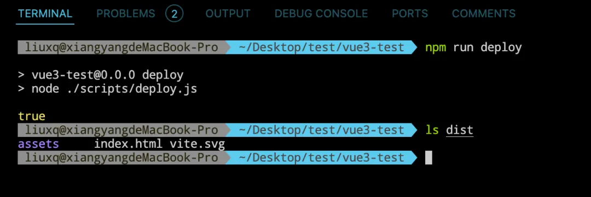

自动化部署的的方式有很多，之前也写过两种，今天跟大家介绍一下如何在不依赖 Jenkins、gitLab CI/CD 和 github Action 的情况下，自己通过 node.js 实现自动化部署。
node-ssh
这里我们主要依赖一个叫 node-ssh 的工具，它是一个用于通过 SSH 协议远程执行命令、传输文件的 Node.js 库。它在 ssh2 的基础上提供了更高级别的接口，可以让我们在 Node.js 中使用 SSH 变得更简单。
接下来我们用一些示例来让大家先了解一下它的基本用法。
首先要安装一下，如果项目使用的 typescript 的话需要安装一下它的类型文件。
pnpm add node-ssh
# typescript
pnpm add @types/node-ssh
安装完成之后，就可以通过 node-ssh 和我们的服务器建立连接。
import { NodeSSH } from "node-ssh";
import { deployConfig } from "./config.js";
async function deploy() {
const ssh = new NodeSSH();
await ssh.connect(deployConfig);
const result = await ssh.execCommand("ls");
}
deploy();
在这里我们先通过 new NodeSSH 创建一个 ssh 实例，然后通过 connect 跟服务器建立连接。
deployConfig 中的内容主要是这些：
export const deployConfig = {
host: "服务器ip地址",
username: "用户名",
password: "服务器密码",
};
到这一步我们已经成功和服务器建立了连接，现在我们可以通过这个连接执行一个服务器上的命令，看一下效果。
import { NodeSSH } from "node-ssh";
import { deployConfig } from "./config.js";
async function deploy() {
const ssh = new NodeSSH();
await ssh.connect(deployConfig);
const result = await ssh.execCommand("ls");
console.log(`result.stdout ==> ${result.stdout}`);
console.log(`result.stderr ==> ${result.stderr}`);
ssh.dispose();
}
deploy();
这里我们通过 execCommand 执行了一个 ls 命令，查看一下服务器上的目录，如果执行成功，他的结果会放在他的标准输出(stdout)中，如果执行遇到异常，则会将失败的结果也放在失败的信息中，执行之后我们可以看到如下结果：

我们可以看到结果已经正常输出了，根服务器上的是一样的。

这表示我们已经连接成功了，最后的 dispose 是断开与服务器的连接，事办完了，该断开就要断开，不断开那不是浪费资源么……
我们要实现自动化部署，这里依赖的一个主要的方法是 pitDurectory，他可以把我们本地的目录直接上传到服务器上的指定位置。
比如我们现在的目录结果是这样的
.
├── README.md
├── dist
├── index.html
├── node_modules
├── package.json
├── pnpm-lock.yaml
├── public
├── scripts
├── src
├── tsconfig.app.json
├── tsconfig.json
├── tsconfig.node.json
└── vite.config.ts
我们的代码就写在 scripts 这个目录中，现在我们想把 dist 这个目录上传到服务器上的 home 目录下，我们就可以这么做：
import { NodeSSH } from "node-ssh";
import { deployConfig } from "./config.js";
import path from "path";
async function deploy() {
const ssh = new NodeSSH();
await ssh.connect(deployConfig);
const result = await ssh.putDirectory(path.resolve("./dist"), "dist");
console.log(result);
ssh.dispose();
}
deploy();
执行完成之后，终端会打印如下结果：
这说明我们已经成功了，也可以在服务器上验证一下看看

到这里其实已经基本可以实现我们的自动化部署流程了，部署的流程其实也就是将我们本地打包之后的结果推送到远程服务器上 nginx 指定的放置资源的位置，有需要的话可能还会对上一个包做一下备份，我们使用这两个 api 已经可以完成这些步骤了。
实现自动化部署
结下来就让我们实现一个完整的自动化部署流程
import { NodeSSH } from "node-ssh";
import { deployConfig } from "./config.js";
import path from "path";
async function deploy() {
const ssh = new NodeSSH();
await ssh.connect(deployConfig);
const result = await ssh.execCommand("ls", {
cwd: "var/www",
});
const isHasBackup = result.stdout.includes("dist.bak");
if (isHasBackup) {
await ssh.execCommand("rm -rf dist.bak", {
cwd: "var/www",
});
}
await ssh.execCommand("mv dist dist.bak", {
cwd: "var/www",
});
await ssh.putDirectory(path.resolve("./dist"), "var/www/dist");
ssh.dispose();
}
deploy();
在这段代码里边，我们先检查一下有没有备份文件，有的话就删掉，然后把之前的项目资源备份，再上传新的版本。
上传之后修改我们的 nginx 配置文件。CentOS 下，nginx 配置文件的位置通常在 /etc/nginx/nginx.conf，打开这个配置文件，在里边添加一个新的 server。
server {
listen 10087;
allow all;
server_name 82.156.78.63;
root /root/var/www/dist;
index index.html;
location / {
try_files $uri $uri/ /index.html;
index index.html;
}
}
如果是云服务器的话，记得开放配置一下对应端口号的安全组。
我们可以在浏览器里看一下部署的结果：
如果要发新的版本，直接调用一下这个 deploy 方法就可以了，也是很方便的。